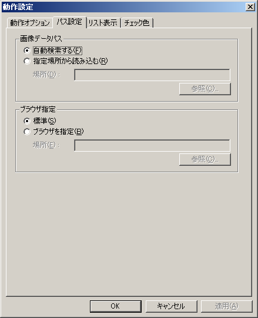

画像データパスの設定では、画像データ（サークルカットおよび会場マップ画像）の読み込み元を指定します。
「自動検索する」に設定しておくと、ハードディスクおよびDVD-ROMドライブから自動的に検索します。
通常はこちらで使用してください。
画像データを手動でDVD-ROMからコピーした場合や、ネットワーク上のドライブにある場合、自動検索でDVD-ROMドライブから上手く読めない場合などは、「指定場所から読み込む」に切り替え、画像データのフォルダを指定してください。
画像データフォルダは「PDATA」「MDATA」の2つのフォルダが存在するフォルダです。
「PDATA」そのものではなく、「PDATA」の一階層上のフォルダになりますので注意してください。
なお、「指定場所から読み込む」設定で指定場所に画像データが見つからない場合は、自動的に「自動検索」に切り替わります。
OSに設定されている「標準のブラウザ」以外のブラウザを使用する時に設定します。
標準のブラウザ以外を使用する場合は「ブラウザを指定」を選択肢、「場所」に使用するブラウザの実行ファイルを指定してください。